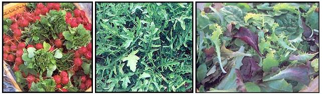

Growing salad greens has been a labor of love for Eliot. Wild arugula (middle photo), along with beet leaves,`````````````````` endive and the occasional oak leaf and rouge d'Hiver lettuce, make for a swinging salad.